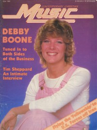

CMnexus
:
Contemporary Christian culture, music, and media.
Magazines
Profiles
Dove Awards
cmnexus.org
CM
nexus
→
Magazine list
→
CCM
→
Issues
Contemporary Christian Music
Jun 1980, vol. 2, iss. 12
< -- Prev
Issue list
Next -- >
Cover

Writers in this Issue
Lawhead, Steve
Platt, Karen Marie
Velten, Ron
Debby Boone
Cover Feature:
"Tuned Into Both Sides of The Business" by Karen Marie Platt
Debby Boone
Article:
"Gospel Companies Pursue Catholic Market"
Catholic
Reba
On The Air:
WAEC
Talent:
Tim Sheppard
by Ron Velten
Cynthia Clawson
George King & The Fellowship
by Karen Marie Platt
What's New:
Tom Autry
-
Better Days
Debby Boone
-
With My Song I Will Praise Him
Andrew Culverwell
-
Everyday
various artists -
Maranthana! 7
Randy Stonehill
-
The Sky Is Falling
Truth
-
Get It from the Source
Phill McHugh
-
Reference Point
Michael Gonzales
-
Fire in My Soul
Listening In:
by Steve Lawhead
Relevant Links
Official web site of CCM
You may be able to find
CCM
in a library near you:
check
Worldcat
< -- Prev
Issue list
Next -- >
CMnexus
(noun)
The magazine index
of modern music
and Christianity
© 2011 CMnexus. Last updated May 2025.
Contact:
Rants and other correspondence to:
editor -AT- cmnexus
-DØT- org
About